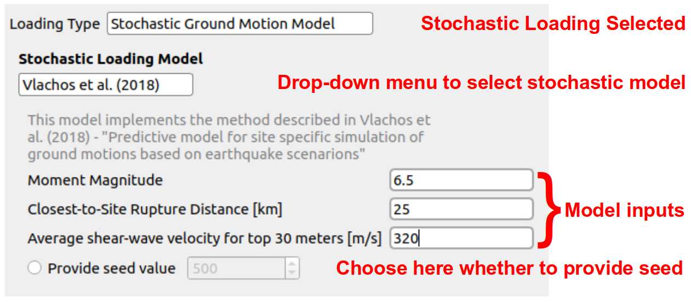
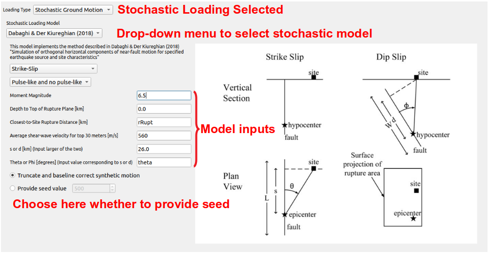

2.4.1. Stochastic Ground Motions
This panel allows users to generate synthetic ground motions for a
target seismic event. In order to do so, the stochastic ground motion
model is selected from the drop-down menu, which is as shown
in Fig. 2.4.1.1. Two stochastic motion models are currently available:
Vlachoes et al. (2018) [VPD18] and Dabaghi & Der Kiureghian (2014, 2017, 2018)
[DDK17, DDK18, DK14]. Depending on the
model selected, the user will be asked to enter values for a number of parameters that are
used to generate a seismic event. For the Vlachos et al. model users are required to input the moment magnitude, site to rupture distance and the average shear wave velocity.
{kind=link}

Fig. 2.4.1.1 Vlachos et al. (2018) model inputs.
For the Dabaghi and Der Kiureghian model geometric directivity parameters, as shown in Fig. 2.4.1.2, required by the Dabaghi and Der Kiureghian model are described completely in Somerville et al. (1997) [SSGA97].
{kind=link}

Fig. 2.4.1.2 Dabaghi & Der Kiureghian (2018) model inputs.
Additionally, users can provide a seed for either model if they desire the same suite of synthetic motions to be generated on multiple occasions. If the seed is not specified, a different realization of the time history will be generated for each run. The backend application that generates the stochastic ground motions relies on smelt, a modular and extensible C++ library for generating stochastic time histories. Users interested in learning more about the implementation and design of smelt are referred to its GitHub Repository.
All input parameters can be specified as random variables by entering a string in the parameter field. Please note that information for the inputs that are identified as random variables needs to be provided in the UQ tab.